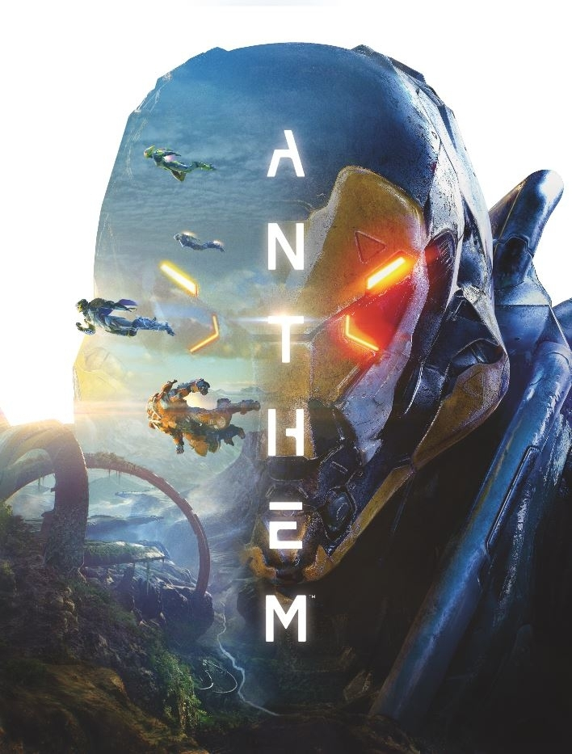

Assassin's Creed Odyssey is an action role-playing video game developed by Ubisoft Quebec and published by Ubisoft. It is the 11th major installment, and 21st overall, in the Assassin's Creed series and the successor to 2017's Assassin's Creed Origins. Set in the year 431 BC, the plot tells a fictional history of the Peloponnesian War between Athens and Sparta. Players control a male or female mercenary (Ancient Greek: μίσθιος misthios) who fights for both sides as they attempt to unite their family and uncover a malign cult.
Anthem is an online multiplayer action role-playing video game developed by BioWare and published by Electronic Arts. The game was released worldwide for Microsoft Windows, PlayStation 4 and Xbox One on February 22, 2019.
Grand Theft Auto V is an action-adventure video game developed by Rockstar North and published by Rockstar Games. It was released in September 2013 for PlayStation 3 and Xbox 360, in November 2014 for PlayStation 4 and Xbox One, and in April 2015 for Microsoft Windows. Set within the fictional state of San Andreas, based on Southern California, the single-player story follows three criminals and their efforts to commit heists while under pressure from a government agency.
Diablo III is a dungeon crawler hack-and-slash action role-playing game developed and published by Blizzard Entertainment as the third installment in the Diablo franchise. It was released for Microsoft Windows and OS X in May 2012, the PlayStation 3 and Xbox 360 in September 2013, the PlayStation 4 and Xbox One in August 2014, and the Nintendo Switch in November 2018.
FarCry New Dawn is a first-person shooter developed by Ubisoft Montreal and published by Ubisoft. The game is a spin-off of the Far Cry series and a narrative sequel to Far Cry 5. It was released for Microsoft Windows, PlayStation 4 and Xbox One on February 15, 2019, and received generally mixed reviews from critics.
Battlefield V Battlefield V is a first-person shooter video game developed by EA DICE and published by Electronic Arts. Battlefield V is the sixteenth installment in the Battlefield series. It was released worldwide for Microsoft Windows, PlayStation 4, and Xbox One on November 20, 2018.